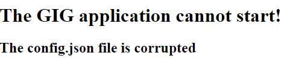
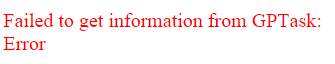
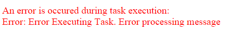
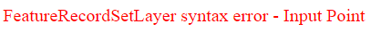

Error messages
The common error messages shown to the user are:
-

It's shown if the config file was missed or damaged.
-

It's shown if the url does not match with a geoprocessing task.
-

A possible message if it's occurred an error during the task execution.
-

It's shown if the syntax of an input feature is wrong.